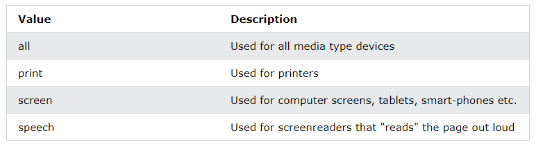

The @media rule, introduced in CSS2, made it possible to define different style rules for different media types.
Examples: You could have one set of style rules for computer screens, one for printers, one for handheld devices, one for television-type devices, and so on.
Unfortunately these media types never got a lot of support by devices, other than the print media type.
Media queries in CSS3 extended the CSS2 media types idea: Instead of looking for a type of device, they look at the capability of the device.
Media queries can be used to check many things, such as:
Using media queries are a popular technique for delivering a tailored style sheet to desktops, laptops, tablets, and mobile phones (such as iPhone and Android phones).
A media query consists of a media type and can contain one or more expressions, which resolve to either true or false.
@media not|only mediatype and (expressions)
{
CSS-Code;
}
The result of the query is true if the specified media type matches the type of device the document is being displayed on and all expressions in the media query are true. When a media query is true, the corresponding style sheet or style rules are applied, following the normal cascading rules.
Unless you use the not or only operators, the media type is optional and the all type will be implied.

body
{
background-color: aqua;
}
/* breakpoint at 640px */
@media (max-width:640px)
{
body
{
background-color: lightblue;
}
}
You can specify the multiple media Queries as follows.
Display a Circle when the width in between 1000 and 700.
.box
{
width: 300px;
height: 300px;
border: 10px solid black;
margin: 50px auto;
border-radius: 0;
}
@media (max-width: 1000px) and (min-width: 700px)
{
.box
{
border-radius: 50%;
}
}
<div class="box"></div>